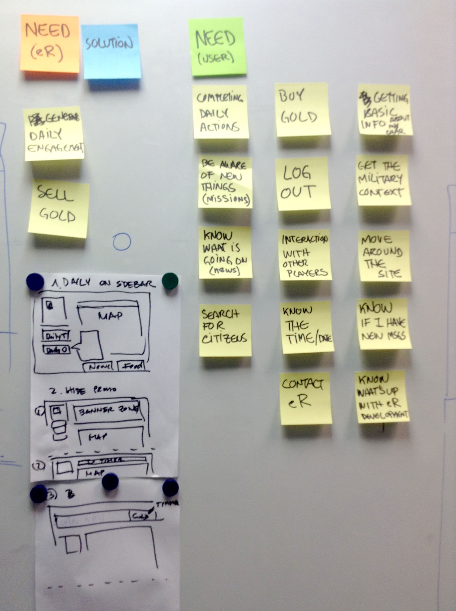
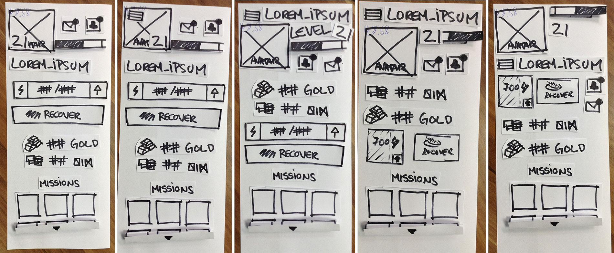

Browser MMORPG Strategy Game
Main Homepage Redesign
Project scope, Wireframing, Interacion Specs
eRepublik's game homepage was due for an update. It was a really touchy subject, it would affect part of the game's revenue sources and would include a new redesigned world map. Everything went well and the Homepage is still almost the same as I designed it, with little adjustments after I left the team.
Homepage Redesign
Step 1. Needs & Prototyping
To make sure nothing important was left out, we made a list of the needs to be satisfied in the new layout.

After completing the list we made an inventory of the game status panel at the left of the screen, drew them in paper, cutted them out and made as many variatios as we could think of, this led us to test the current design
Step 2. Wireframe and Interaction Specs
Designed the first approach to the homepage so the new world map was integrated, as well as fixing the game main navigation and site header, here can be seen the documented design:
World Map Feature Interaction
Designing the new World Map, its interaction model and finding a new and organised way to make sense of all the complex information available to the users in the map.